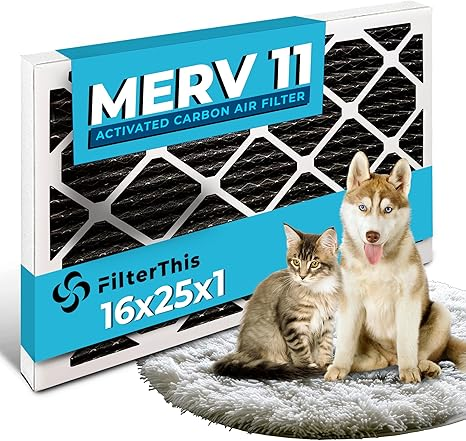

← furnaceprefilter.com
Smart Furnaceprefilter Shopping in 2026
May 2026
The honest truth about furnaceprefilter: most products are decent. What separates good from great are details you won't find in a product listing.
What We'd Actually Buy
→ #5 — Filtrete 20x25x1 Air Filter MERV 5 6-Pack AC Furnace HVAC Filters for Home — Fan favorite
→ #2 — 203371 Pre-Filters Compatible with Honeywell 203371 136388 F50A F50E HVAC F — Editor's pick
→ #1 — Disposable Panel Air Filter 12x12x1 Case of 12 HVAC Furnace Pre-Filter — Consistently rated
→ #4 — Simply 16x25x1 Air Filter Merv 13 6 Pack For Home AC Furnace HVAC — Consistently rated

→ #3 — 16x25x1 Air Filter MERV 11 Activated Carbon Pet Dander Dust Defense Pollen — Best seller
Rookie Mistakes
- Blind brand loyalty — Your favorite brand might not make the best furnaceprefilter. Stay open to better options.
- Not measuring — "It looked bigger online" is the #1 return reason for furnaceprefilter. Measure twice.
- Ignoring the fine print — Some furnaceprefilter listings look great until you realize key parts are sold separately.
What Separates Good From Great
- Build quality — Cheap furnaceprefilter fall apart fast. Look for solid construction and quality materials.
- Compatibility — Always double-check that furnaceprefilter fits your specific setup before ordering.
- Material grade — Higher-grade materials in furnaceprefilter last longer and perform better, even when designs look similar.
- Value ratio — Mid-range furnaceprefilter usually deliver 90% of premium performance at half the cost.
- Dimensions matter — Read the actual measurements. "Large" means different things to different furnaceprefilter manufacturers.
Quick Tips Before You Buy
- Buying furnaceprefilter as a gift? Pick something with easy exchanges. Preferences are personal.
- The Q&A section on furnaceprefilter listings often answers questions that no review covers.
- Between two options? Go with the one that has more reviews. Volume of feedback matters for furnaceprefilter.
- The 3-star reviews are gold. They're usually the most balanced and honest takes on furnaceprefilter.
The Bottom Line
Our comparison tables on furnaceprefilter.com break down options by price, features, and ratings. Start there.
Affiliate Disclosure: As an Amazon Associate, we earn from qualifying purchases. This doesn't affect our recommendations.